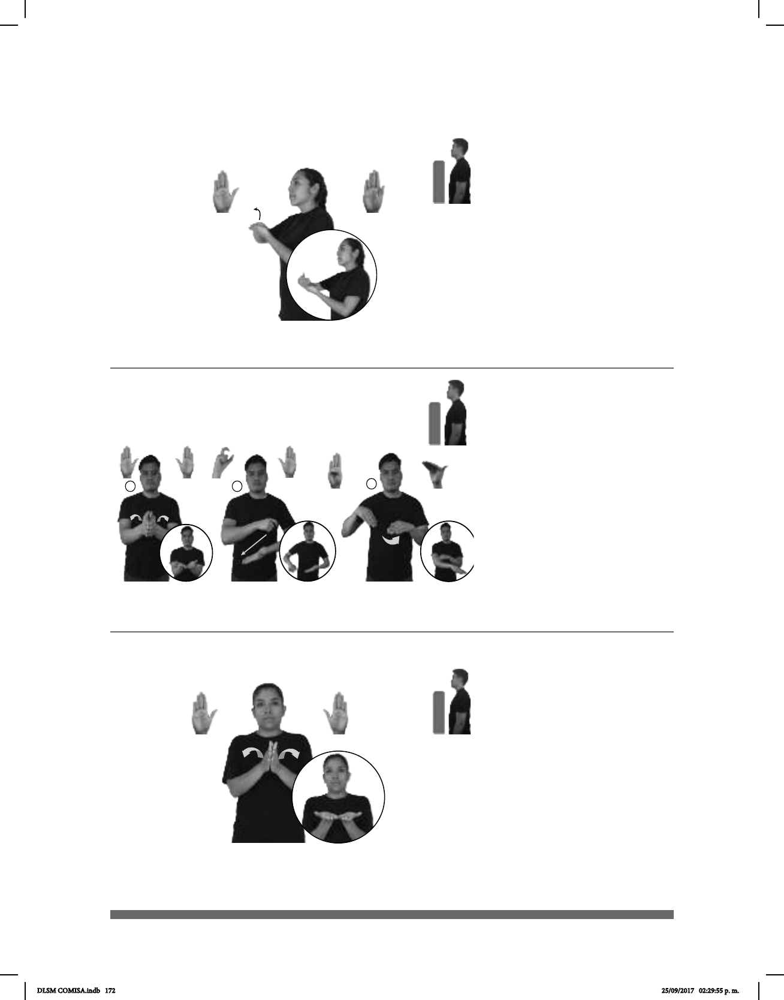

172
(B-P 184)
HOY LAPTOP pro-YO COMPRAR
Hoy compré una laptop.
Seña: SB
MD B-P.2; MB B-P.6
MD la palma inicia hacia
abajo y termina hacia adentro. MB palma
hacia arriba.
A la altura del pecho. MD
sobre MB.
MD el antebrazo gira y
cambia la orientación de la mano, pasa de
mostrar el lateral a mostrar el dorso.
Simula la acción de abrir
la pantalla de una laptop.
sust. f. Computadora
personal de tamaño reducido y fácilmente
transportable.
Seña: SS
B-P.2
Las palmas inician
encontradas frente a frente y terminan
hacia arriba.
A la altura del pecho.
Las manos parten de un
mismo punto y luego se abren hacia
abajo.
Simula la acción de
abrir un libro.
sust. m. Conjunto de hojas
de papel impresas y encuadernadas en
el que se trata algún tema.
(B-P 185)
(B-P 186)
HOY NUEVA LIBRERÍA pro-YO YA CONOCER
Hoy conocí una nueva librería.
pos-SU LIBRO MATEMÁTICAS pro-USTEDES SACAR
Saquen su libro de Matemáticas.
Seña: SC: I. SS; II. y III. SB
I. B-P.2; II. MD Q.1, MB
B-P.2; III. MD B-P.1, B-P.7
I. Las palmas inician
encontradas frente a frente y terminan hacia
arriba; II. MD palma hacia abajo. MB palma
hacia arriba; III. MD y MB palmas hacia
abajo.
I. A la altura del pecho; II. y III.
MD del pecho a la cintura del lado izquierdo
al derecho. MB a la altura del plexo.
I. Las manos parten de un
mismo punto y luego se abren hacia abajo;
II. MD recto sobre MB; III. La MD se
mueve formando un arco por debajo de MB.
sust. f. Tienda donde se venden
libros.
DLSM COMISA.indb 172 25/09/2017 02:29:55 p. m.